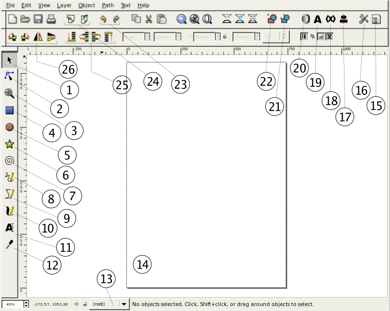

Inkscape
Inkscape – darmowy program do tworzenia grafiki wektorowej, stworzony w ramach projektu GNU.
Pozwala na tworzenie przede wszystkim symboli, znaków towarowych i logotypów produktów/firm/stowarzyszeń oraz tworzenie ikon czy postaci komiksowych. Jest odpowiednikiem popularnego, płatnego programu CorelDRAW.
Pracuje w systemach Linux, Mac OS, Windows, a rozpowszechniany jest na licencji GNU GPL.
Nie obsługuje standardu CMYK, pozwalając jedynie na jego symulację.
Umożliwia tworzenie kształtów i linii, strzałek, tworzenie krzywych Béziera, wyginanie napisów wzdłuż krzywych, malowanie obiektów – także gradientem, nadawanie im przezroczystości, zmianę kształtów dowolnych obiektów za pomocą rozbudowanej edycji węzłów, sumowanie i odejmowanie ścieżek, grupowanie i rozgrupowywanie obiektów, kaligrafię. Udostępnia narzędzie do wyrównywania obiektów względem siebie.
Pozwala na bezpośrednie dołączanie do projektu rysunków grafiki rastrowej lub ich wektoryzację (trasowanie), za pomocą zintegrowanej wtyczki wykorzystującej program potrace. Program ten zawiera również prosty edytor kodu XML, co umożliwia dostęp m.in. do zablokowanych obiektów.
Jego zaletą jest wbudowany zbiór polskich lekcji, dostępnych w menu pomocy, zawierających praktyczne ćwiczenia od podstawowych kształtów do zaawansowanych jak kaligrafia czy elementy kompozycji.
Macierzystym formatem zapisu plików w Inkscape jest SVG. Program umożliwia jednak eksport do innych formatów – EPS, PS, AI, zwykły SVG, POV (POV-Ray, tylko spline'y), SVGZ (skompresowany SVG).
nkscape wykorzystuje bibliotekę GTK+ oraz gtkmm, która docelowo ma być w programie jedynym sposobem na komunikację z interfejsem graficznym. Program jest odpowiedzią na niezadowolenie części programistów z kierunku i postępu prac nad innym podobnym programem – SodiPodi.
Interfejs programu
- Tryb edycji obiektów
- Tryb edycji węzłów
- Tryb zmiany powiększenia
- Tryb rysowania prostokątów
- Tryb rys. ob. okrągłych
- Tryb rys. gwiazd i wieloboków
- Tryb rys. spiral
- Tryb rys. odręcznego
- Tryb rys. prostych łamanych
- Tryb kaligrafowania
- Tryb edycji napisów
- Pipeta (kolor wypełnienia)
- Wybór aktywnej warstwy
- Zarys kartki (domyślnie A4)
- Okno opcji rysunku
- Okno opcji programu
- Okno wyrównania obiektów wzg. siebie
- Edytor kodu SVG
- Właściwości czcionki
- Okno koloru wypełnienia, obramow. i param. linii
- Rozdziel zgrupowane obiekty
- Połącz obiekty w grupę (jeden obiekt)
- Cofnij / Ponów krok edycji
- Importuj plik / Eksportuj do PNG
- Przesuwanie obiektów względem siebie (nakładanie)
- Odbicie / Obrót obiektu (lub zaznaczonej grupy)